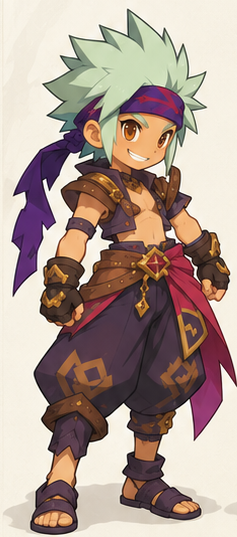

RECONSTRUCTION / BASE MASCULINE
Du dessin au volume.
Une étude de formes à examiner sous tous les angles.

Chargement du modèle…
Glisser pour tourner · Molette pour zoomer · PNG exporté depuis le rendu affiché.
Préparation de la revue…
Cette reconstruction reste en dessous de la cible artistique : pose, expression, mèches et vêtement demandent encore du travail. Elle ne constitue pas un modèle de jeu final ; elle n’est ni riggée ni animée.